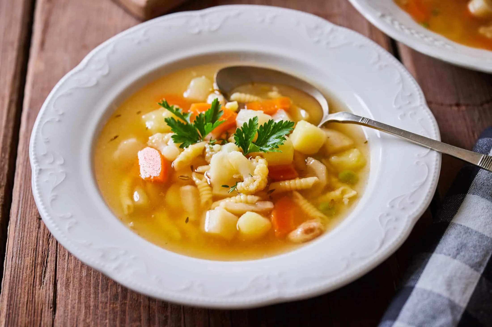
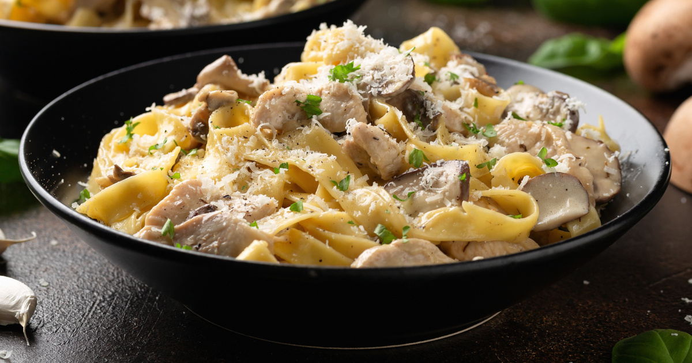
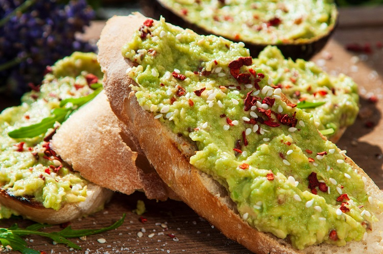
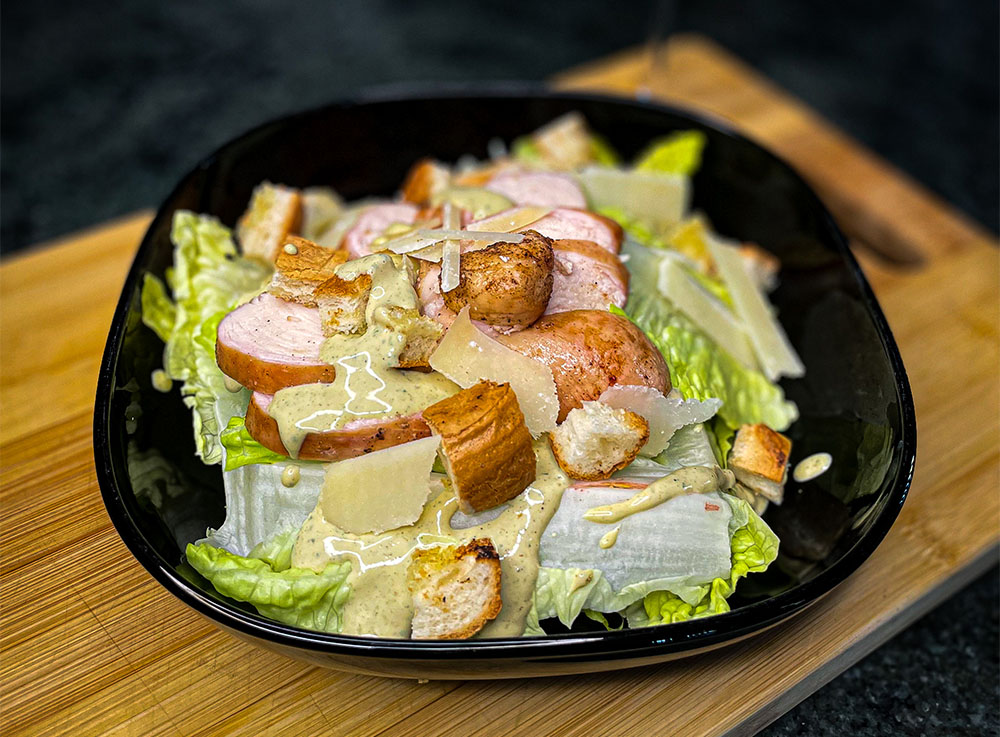
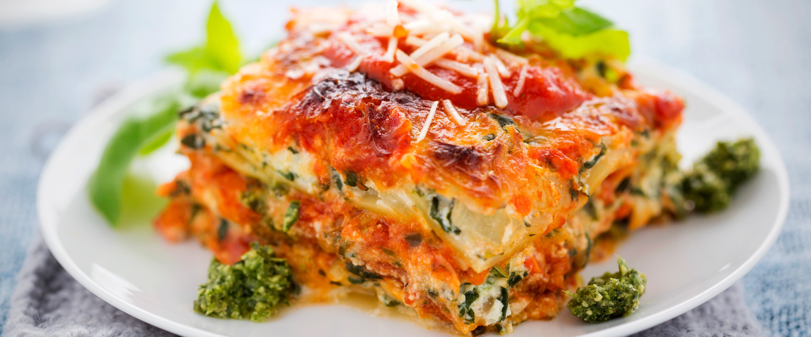
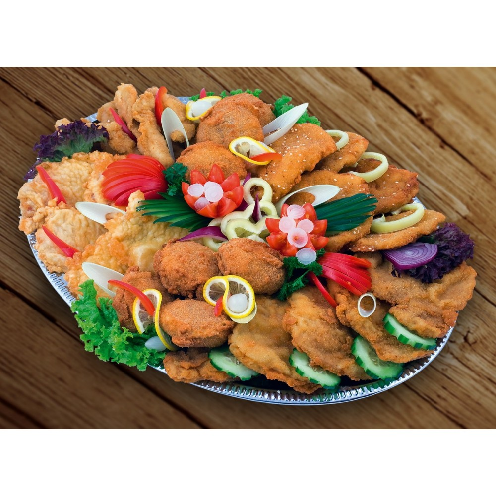

✨"A kedvenc házi receptjeink egy helyen - egyszerű, kipróbáltam, finom"✨
🥞 Klasszikus palacsinta
⏱ Elkészítési idő: 20 perc
🔥 Nehézség: Könnyű
🍽 Kategória: Desszert
Hozzávalók:
- 2 db tojás
- 20 dkg finomliszt
- 3 dl tej
- 1 csipet só
- 1 evőkanál cukor
- 1 evőkanál olaj
Elkészítés:
- 1. A tojásokat keverd habosra a cukorral és a sóval.
- 2. Add hozzá a lisztet és fokozatosan a tejet.
- 3. Simára keverd a tésztát.
- 4. Forró serpenyőben süsd ki a palacsintákat.
💡 Tipp:
Lekvárral, kakaóval vagy túróval is tökéletes
🍗 Ropogós sült csirkecomb
⏱ Elkészítési idő: 60 perc
🔥 Nehézség: Közepes
🍽 Kategória: Főétel
Hozzávalók:
- 4 db csirkecomb
- 2 evőkanál olaj
- só, bors
- pirospaprika
- fokhagymapor
Elkészítés:
- 1. Melegítsd elő a sütőt 180°C-ra.
- 2. Fűszerezd be a csirkecombokat.
- 3. Helyezd sütőpapíros tepsibe.
- 4. Süsd 50–60 percig, félidőben fordítsd meg.
💡 Tipp:
Sült krumplival vagy salátával kínáld.
🥣 Gyors zöldségleves

⏱ Elkészítési idő: 30 perc
🔥 Nehézség: Könnyű
🍽 Kategória: Leves / Vegetáriánus
Hozzávalók:
- 2 db sárgarépa
- 1 db fehérrépa
- 1 kis fej vöröshagyma
- 1 evőkanál olaj
- só, bors
- petrezselyem
Elkészítés:
- 1. A zöldségeket aprítsd fel.
- 2. Olajon futtasd meg a hagymát.
- 3. Add hozzá a zöldségeket és öntsd fel vízzel.
- 4. Főzd kb. 25 percig.
💡 Tipp:
Tésztával vagy galuskával is feldobható.
🍝 Tejszínes-gombás tészta

⏱ Elkészítési idő: 25 perc
🔥 Nehézség: Könnyű
🍽 Kategória: Főétel / Vegetáriánus
Hozzávalók:
- 25 dkg tészta
- 20 dkg csiperke gomba
- 2 dl főzőtejszín
- 1 gerezd fokhagyma
- só, bors
- olaj
Elkészítés:
- 1. Főzd meg a tésztát.
- 2. Pirítsd meg a gombát fokhagymával.
- 3. Öntsd fel tejszínnel.
- 4. Keverd össze a tésztával.
💡 Tipp:
Reszelt sajttal tálald.
🍰 Bögrés csokis süti
⏱ Elkészítési idő: 10 perc
🔥 Nehézség: Nagyon Könnyű
🍽 Kategória: Desszert / Gyors
Hozzávalók:
- 4 evőkanál liszt
- 2 evőkanál cukor
- 2 evőkanál kakaópor
- 1 tojás
- 3 evőkanál tej
- 2 evőkanál olaj
Elkészítés:
- 1. Keverd össze az alapanyagokat bögrében.
- 2. Mikrózd 2–3 percig.
- 3. Hagyd kicsit hűlni.
💡 Tipp:
Vaníliafagyival isteni.
🥗 Avokádós pirítós

⏱ Elkészítési idő: 10 perc
🔥 Nehézség: Nagyon Könnyű
🍽 Kategória: Reggeli / Vegetáriánus
Hozzávalók:
- 1 db avokádó
- 2 szelet kenyér
- Só, bors
- Citromlé
Elkészítés:
- 1. Pirítsd meg a kenyérszeleteket.
- 2. Törd össze az avokádót, locsold meg citromlével, sózd, borsozd.
- 3. Kend a pirítósra.
💡 Tipp:
Szórd meg pirított magvakkal is.
🧁 Csokoládés-mogyorós muffin
⏱ Elkészítési idő: 25 perc
🔥 Nehézség: Könnyű
🍽 Kategória: Desszert
Hozzávalók:
- 100 g liszt
- 50 g cukor
- 50 g vaj
- 1 tojás
- 2 ek kakaópor
- 50 g mogyoró
Elkészítés:
- 1. Keverd össze a száraz és nedves alapanyagokat.
- 2. Kanalazd muffin formákba, szórd meg mogyoróval.
- 3. Süsd 180°C-on 15–20 percig.
💡 Tipp:
Csokiöntettel tálalva isteni.
🥗 Cézár saláta

⏱ Elkészítési idő: 15 perc
🔥 Nehézség: Könnyű
🍽 Kategória: Saláta / Főétel
Hozzávalók:
- Római saláta
- Csirkemell
- Parmezán
- Cézár öntet
- Crouton
Elkészítés:
- 1. Süssd meg a csirkemellet, szeleteld fel.
- 2. Keverd össze a salátát, öntsd rá az öntetet, szórd meg parmezánnal és croutonnal.
💡 Tipp:
Pirított baconnel még ízesebb.
🍝 Spenótos-ricottás lasagne

⏱ Elkészítési idő: 50 perc
🔥 Nehézség: Közepes
🍽 Kategória: Főétel / Vegetáriánus
Hozzávalók:
- Lasagne lap
- Ricotta sajt
- Spenót
- Paradicsomszósz
- Mozzarella
Elkészítés:
- 1. Rétegezd a lasagne lapokat, spenótot, ricottát és szószt.
- 2. Tetejére tegyél mozzarellát.
- 3. Süsd 180°C-on kb. 35 percig.
💡 Tipp:
Friss bazsalikommal tálald.
🍌 Banános-zabpelyhes smoothie
⏱ Elkészítési idő: 5 perc
🔥 Nehézség: Nagyon Könnyű
🍽 Kategória: Ital / Reggeli
Hozzávalók:
- 1 db banán
- 2 ek zabpehely
- 2 dl tej vagy növényi ital
- Méz ízlés szerint
Elkészítés:
- 1. Turmixold össze az összes hozzávalót.
- 2. Azonnal fogyasztható.
💡 Tipp:
Egy kevés fahéjjal még finomabb.
🥘 Rántott zöldség tál

⏱ Elkészítési idő: 30 perc
🔥 Nehézség: Könnyű
🍽 Kategória: Főétel / Vegetáriánus
Hozzávalók:
- Cukkini, padlizsán, paprika
- Liszt, tojás, zsemlemorzsa
- Só, bors
- Olaj a sütéshez
Elkészítés:
- 1. Vágd fel a zöldségeket szeletekre.
- 2. Panírozd liszt-tojás-zsemlemorzsa sorrendben.
- 3. Süss aranybarnára forró olajban.
💡 Tipp:
Tzatzikivel szuper.